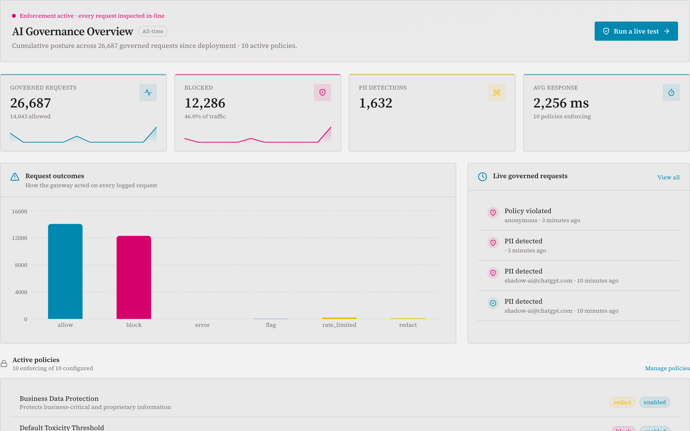

Let your teams use AI. The data never leaves.
Sensitive values become realistic stand-ins before any prompt leaves. On your apps' API calls, the answers come back restored.
POST /v1/chat/completions "Draft renewal terms for Meridian Trust, account IN-4471-0392, contact priya.raghavan@meridiantrust.in"The provider receives
"Draft renewal terms for Halberd Mutual, account IN-9083-5517, contact anaya.k@halberd.example"Your caller gets back
The full answer, restored to the real values.
verdict: masked (3 spans) fast path 3.1 ms
Sits in front of the providers you already use. Deploys on the stack you already run.
The gap your AI licence leaves open
The licence doesn't see everything
ChatGPT Enterprise and Copilot cover people in a browser. They don't cover your applications and agents calling model APIs directly, or the personal accounts staff still use.
Blocking stops the work
Traditional DLP either lets a prompt through or walls the user off, so they switch to a personal device and you lose visibility entirely.
You can't prove any of it
Only about a third of organisations send AI logs anywhere an auditor would accept. The contract transfers liability; it doesn't produce evidence.
The life of one API call
Follow a single request through the gateway: scanned, masked, answered, restored, and evidenced. The whole round trip takes less time than a blink.
"Summarise renewal risk for Meridian Trust, account IN-4471-0392"
claims-app calls POST /v1/chat/completions
audit: masked (2 spans), 187 ms end to end, entry chained to the one before it
This is not a mock-up
The governance console, captured from the running pilot deployment: 26,685 requests governed at time of capture, every verdict logged.

Captured live. Average response includes the model's own generation time; detection itself adds under 200 ms of that.
What it does
Reversible masking
On your apps' API calls, values are masked outbound and restored inbound, a full round trip. In the browser, stand-ins go out and stay on screen. Either way the provider never sees real data.
Two enforcement planes
Content inspection on LLM traffic, plus role-to-scope gating on any enterprise API.
Shadow-AI coverage
A browser extension that masks outbound or blocks on ChatGPT and claude.ai, plus a forward-proxy variant for the network path.
Document-upload sweep
Catches hidden text, OOXML tricks, macros and PDF JavaScript before a file reaches an LLM or a RAG pipeline: the blind spot perimeter DLP doesn't look into.
Vendor and agent governance
Every third-party AI credential scoped, monitored, and killable inline. The kill-switch enforces in about half a millisecond.
Audit-grade evidence
Tamper-evident, hash-chained logs mapped line-by-line to named controls your auditor already knows.
From "we blocked it" to "we let the work happen safely"
On your apps' model-API calls, GovernVeil replaces a sensitive value with a reversible surrogate on the way out and restores it on the way back. In the browser it masks outbound, so nothing real ever leaves the tab. It runs entirely in your perimeter, which is why it works air-gapped.
| App sends | NHS number 485 777 3456 |
| Provider sees | NHS number 943 210 8871 |
| App gets back | NHS number 485 777 3456 |
| Audit shows | 1 span masked, restored, hash-chained |
The standard we hold ourselves to
Claims are cheap. Evidence is the product.
Proof, not claims
Harmful-prompt block rate on AdvBench, with a public, re-runnable harness in the repo.
False positives in the same benchmark run. A guard that cries wolf gets routed around; ours doesn't.
Fast-path latency, and about 190 ms p50 for the ML path on GPU. Two numbers with methodology, not one marketing figure.
Detection also improves where it matters: a review-tier classifier learns from your reviewers' own labels, in-house. It closed a real evasion from 85% to 100% on held-out data with no new false positives, and your data never left.
The full harness and methodology travel with pilot conversations.
See it mask a real prompt in 90 seconds
A paid design-partner pilot: one app or one team, in your environment, in week one.